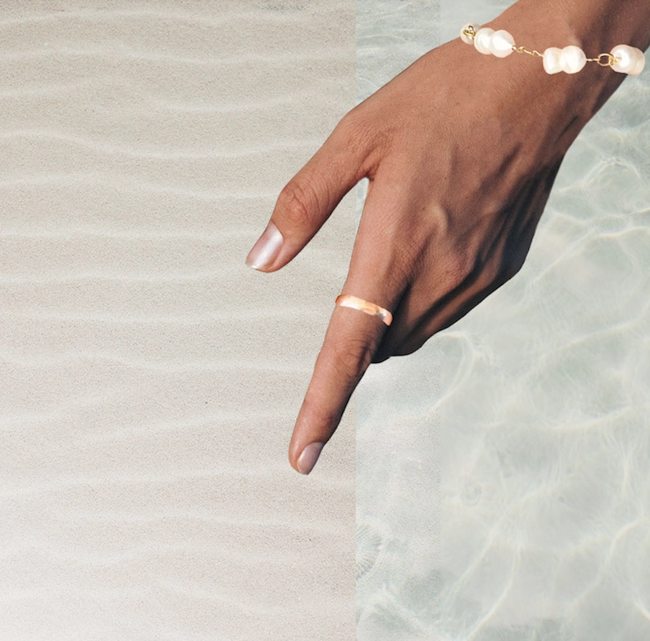
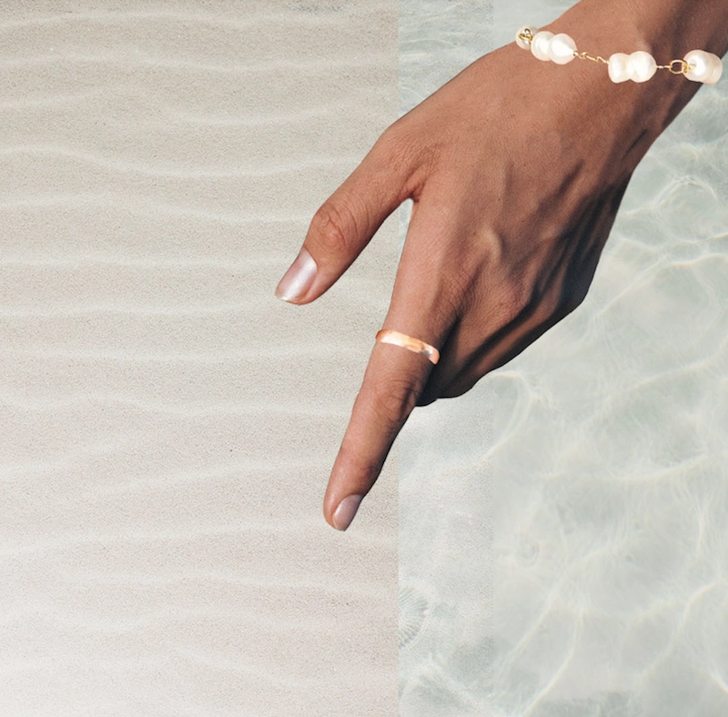

Responsive_v2
Design-processen
På dette tema har jeg lært at kode mit første website. Vi fik tildelt nogle wireframes og layoutdiagrammer, som vi byggede hjemmesiden op af. Der var nogle forskellige krav til f.eks. billeder. Vi lærte her hvordan man justerede billedestørrelser i pixels, og hvordan man tilpassede formaterne, så de passede ind i de valgte grids. Vi lærte også en masse om Photoshop på dette tema. Det har jeg især haft stor udnyttelse af til at lave mit Splashbillede, som fungerer som forsiden på mit website. Jeg benyttede mig af forskellige rettighedsfrie billeder, som jeg redigerede og stylede sammen til et nyt billede, så det ramte den stil jeg gerne ville have frem

 
